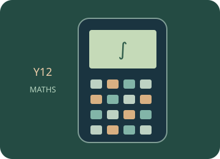

Calculus
Investigate turning points and numerical rates and areas, with further calculator procedures in the manual.
Start with the mathematical explanations and worked examples below, then choose a guided calculator exercise. The trainer highlights the next physical key; afterwards, repeat in free practice and interpret your result.

Build the idea, one step at a time.
Calculus studies change and accumulation. A derivative describes an instantaneous rate of change, which can be approached through slopes over smaller intervals. A definite integral describes signed accumulation over an interval. The units depend on the original function and the variable of integration.
A numerical derivative or integral is an approximation under a method and settings, not an automatic exact proof. A stationary point has derivative zero, but further reasoning is needed to classify it. Signed area below an axis contributes negatively; total geometric area or total distance can require splitting intervals and using magnitudes.
01 · From average rate to instantaneous rate
An average rate compares output change with input change over an interval. A derivative is the limiting rate as that interval shrinks, when the limit exists. On a graph it is a tangent slope, not the height of the graph at the same input.
02 · Classify a stationary point
Solving f′(x) = 0 identifies stationary candidates, but zero derivative does not by itself guarantee a maximum or minimum. Examine how the derivative changes sign or use a suitable second-derivative argument. Also inspect endpoints when finding an interval’s global extreme.
03 · Distinguish accumulation, area and distance
A definite integral gives signed accumulation. Contributions below the axis have negative sign, so a net result can be smaller than total geometric area. For velocity, integrate signed values for displacement and magnitudes for total distance. Split at sign changes when needed.
You can read these explanations without operating the simulator. The practical activities, games and revision below let you apply the ideas and check your reasoning.
Now investigate →Use the calculator, one key at a time.
Loading the calculator exercises…
Related manual procedures
The source trainer contains 42 skill pages. Reviewed procedures and outlines awaiting physical-device verification are labelled separately. A guided simulator example does not certify every menu on a physical calculator.
Practise, then explain.
Predict the result, follow the highlighted keys and interpret the calculator’s answer. This is practice: calculator actions are not sent to the teacher dashboard. These calculator activities support the examples and explanations in your class lessons.
Open the free calculator →